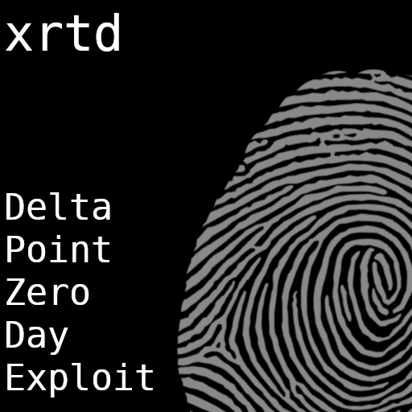

|  |
|
||||||||||||||||||
|
Honestly, "Delta" was created as a sort of way for me to challenge my
understanding of what is humane and what is machine-like.
The extensive use of vocal samples combined with the
cleary digitally created instruments shows the struggle of the human
in the world of algorithms, calculated steps and social media
spoonfeeding.
The entire 14 minutes of playtime are centered around the idea of giving tracks space where the instruments and vocals play into giving tracks order and calmness, while the synths and drums add to the cacophony and disharmony of the entire musical structure. But in the end, we need tech. And tech needs us. The tracklist itself is very short, giving the fact that the whole project was finished in somewhat more than a month. The tracks are available below: Go back. |
|||||||||||||||||||